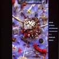
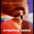
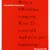
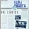
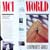
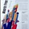
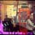

Shifting Strategic Positioning
BackgroundBy 1989, MCI had succeeded in establishing itself among homeowners as a low cost telephone company that was an alternative to AT&T. However, the corporate market used a far different criteria and, in order to successfully break in, MCI needed to reposition itself as a telecommunication corporation that consistently delivered quality service. We worked with them for more than six years to help accomplish this goal.
IN Magazine
A primary vehicle of the image change was a new magazine directed to Fortune 500 Presidents, CEOs and CIOs. "IN," the "magazine for the information age" (which we named, designed, and found journalistic support for), was created to deliver feature stories that focused on how technology was changing the way business did business. The magazine intentionally featured companies that were using competitive long-distance services. Over the course of the interviewing process, doors would open, relationships would develop -- resulting in sales. Research showed that $10s of millions in sales from new corporate customers were directly attributable to the existence of the magazine.
MCI World
MCI had been publishing more than 14 separate newsletters. We merged them into a single company-wide internal communications vehicle, "MCI World," designed more like "USA Today" than like a newsletter. The publication reinforced MCI's entrepreneurial culture through a 3-section design that provided information employees could use and share: a general overview of company activities; a section on MCI's marketing efforts, and; a section on MCI's latest technological innovations. This technology/marketing focus served to spur a dialogue between the respective internal groups that led to new product and service ideas.
The first issues of "MCI World" were created at Frankfurt Balkind and linked electronically to MCI's Washington headquarters, allowing MCI staff to become familiar with the production process so they could eventually assume full responsibility and bring it in-house.
Annual Reports
The '91, '92 and '93 annual reports helped MCI communicate a shifting strategic message: '91 focused on how MCI created value for its shareholders and customers through a combination of industry expertise, intelligent architecture, customer responsiveness and global vision; '92 reinforced MCI's position as an established industry leader with a solid history and a strong vision for the future; 93' helped launch "Network MCI", a global communications network launched in early '94, and highlighted MCI's success in the creation of telecommunications "superbrands."
Video Sales Presentations
These sequences are part of a larger multi-media show that was directed to MCI customers for MCI Executive Seminars. Frankfurt Balkind produced video vignettes to introduce case studies of companies that had successfully used new technologies. Each of these studies, also featured in IN Magazine, were further discussed by a speaker at the podium. Over the years, we also created videos for annual meeting and financial "road show" presentations.